Tetris 66
This is a replica of the multiplayer battle royale style Tetris game called Tetris 99. I did not have a Nintendo Switch, the platform that the game was exclusive to, so in order to play it, I recreated it as a web application. In the original game, up to 99 players complete to complete rows, which send attacks in the form of ‘garbage rows’ to other players. This game took slightly longer than a weekend to create and has all of the functionality of the original game, but recreated on the web. The communication between clients in this game is done via a hosted Node.js server which manages information sent through WebSockets. All of the visuals are created with HTML, CSS, and HTML Canvas.

Country Guesser
This project sprouted from my drive to learn all of the countries and capitals of the world. I could not find any free applications for this, so I decided to create my own. I started out not knowing much about geography, but from my game, I have learned the locations and capitals of many countries. Sadly, due to Google Fusion Tables being shut down as of December 3rd, this game is not currently working.
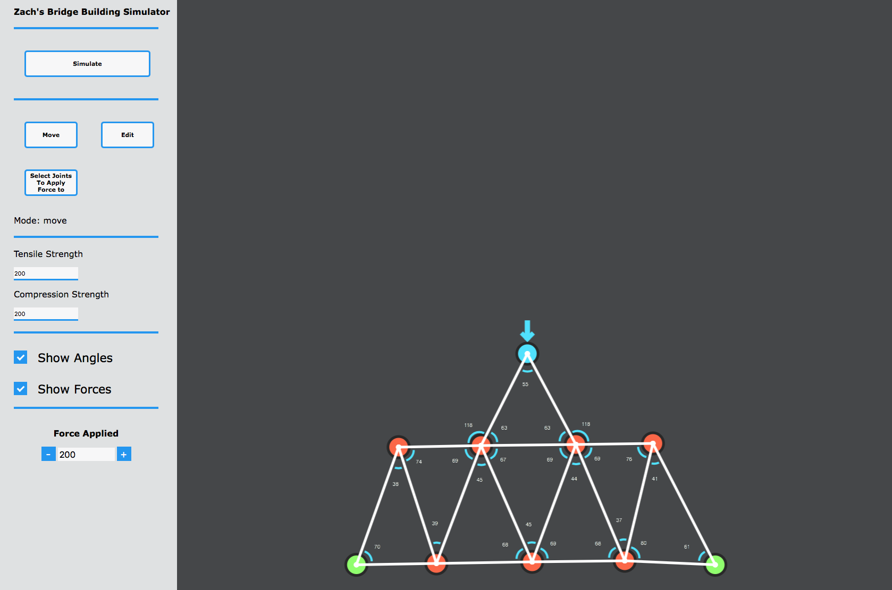
Bridge Building Simulator
In physics class, I won the balsa wood bridge competition. My bridge held sixty pounds, fifteen pounds more than the second-place competitor. After the contest, I was inspired to create a bridge-building simulation program to optimize my bridge. To make this program, I researched many topics that were not covered in class, including how structural forces are distributed throughout supports. The program calculates the distribution of forces on the bridge. Users can experiment with how different designs affect a bridge’s structural integrity to learn how to create a stronger bridge.
Unity Games
For the past five years, I have been designing and developing games in Unity. To be able to develop games, I have spent countless hours researching the process of making games from concept to production. Using my findings, I have taught myself to program, design three-dimensional models, make digital art, and market and distribute the games I create. I love making the ideas that fly into my head become reality. Designing games has given me a creative outlet to express both the analytical and artistic sides of my personality. Because of the technical challenges I face while developing games, I extensively practice my ability to solve problems.
Unity Stick Fighting Game
This is one of the most recent projects that I have been developing in Unity using C#. In the near future, I plan to release this game to Steam, the largest digital distribution platform for games. I created all of the 3D models for this game in Blender. I also created all of the visual effects and shaders in Unity. The most difficult challenge with creating this game has been implementing the Steamworks API. Getting the latency between clients to be low enough for the game to be playable has also been a large source of issues. Because the players need to be synced between clients but also need to be controlled by the Unity physics engine, I have had to compromise between the smoothness and accuracy of the scene. The solution I came up with was assigning one client to be the ground truth and intermittently interpolating the positions of the other clients to match.
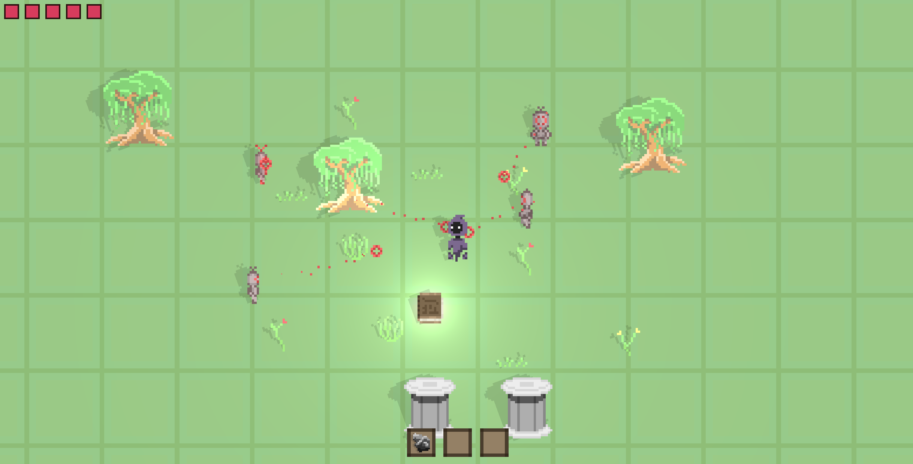
Combo Quest
This is a screenshot of a game I was working on called Combo Quest. The player’s goal in this game is to scavenge for and combine different materials to aid them in their journey through the world. The reason I included this because it demonstrates some of the artwork that I regularly create for my games. When creating graphical artwork for games, including things like the special effects, characters, and game environment, I am challenged to establish a singular cohesive style in order to develop the mood of the game. One way I accomplish this is by making assets in a style known as “pixel art.” In this style, the dimensions of the digital canvas are very small. The resulting images are intentionally pixelated as an homage to games made in a similar style when technology did not permit high definition graphics. The limitations of this style have encouraged me to be more creative when designing artwork for my games.
- 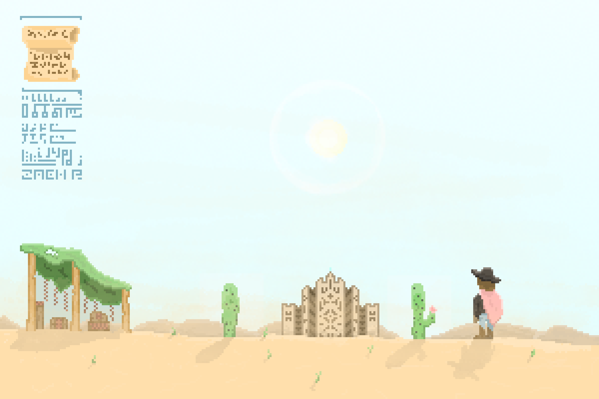
- 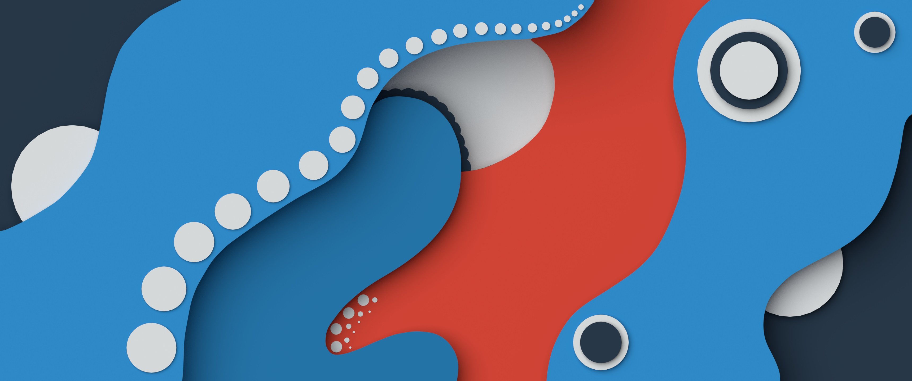
- 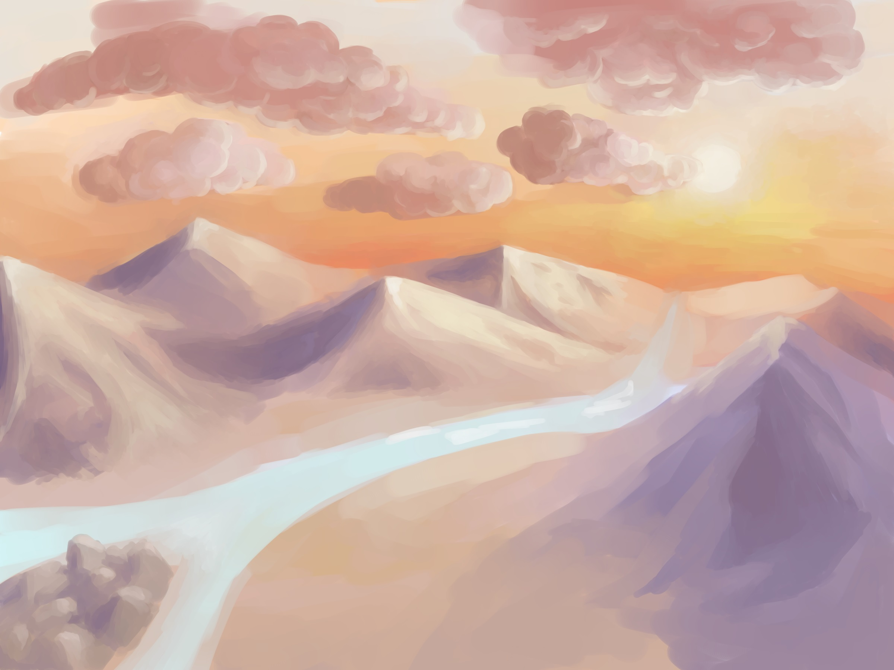
- 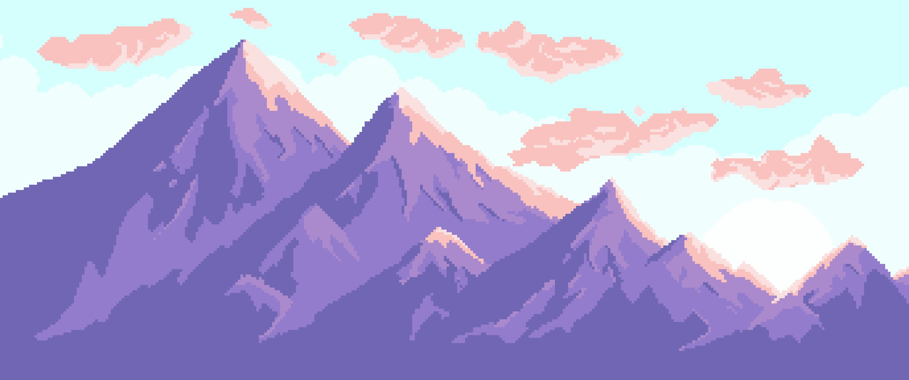
- 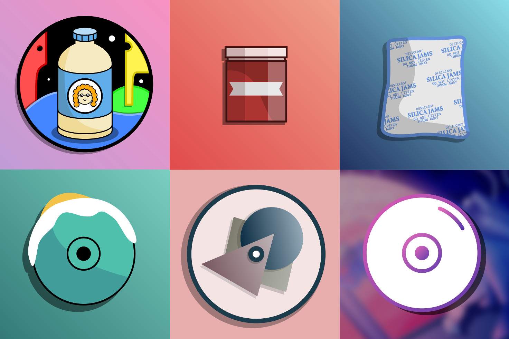
Digital Art
One of my passions is creating digital art. My interest in making art digitally initially sprouted from my love of making games and my necessity for high quality assets at a low price for the indie games that I was creating. This lead me into learning how to create and texture 3D models, make pixel art, vector graphics and much more.
- 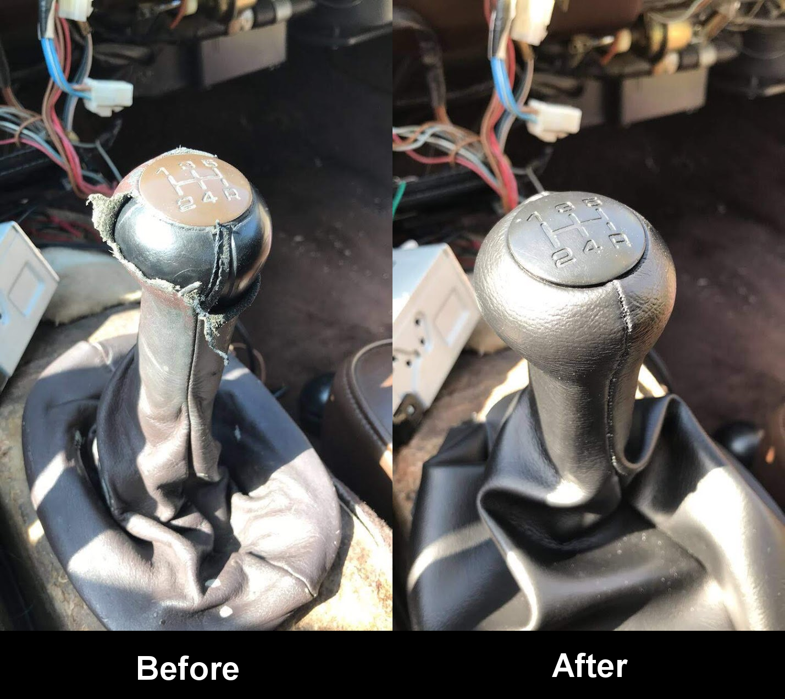
- 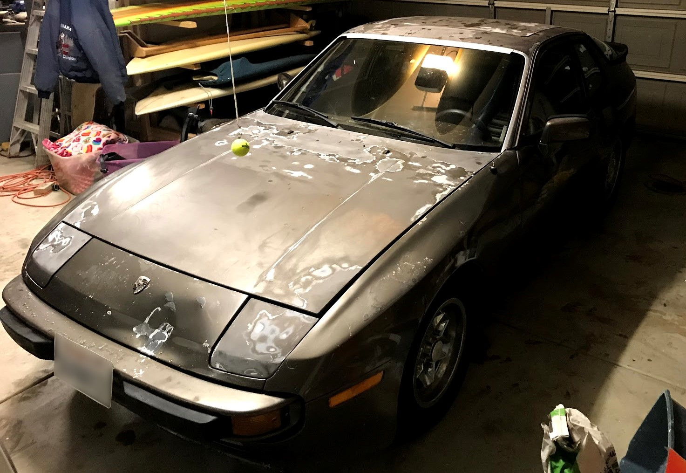
- 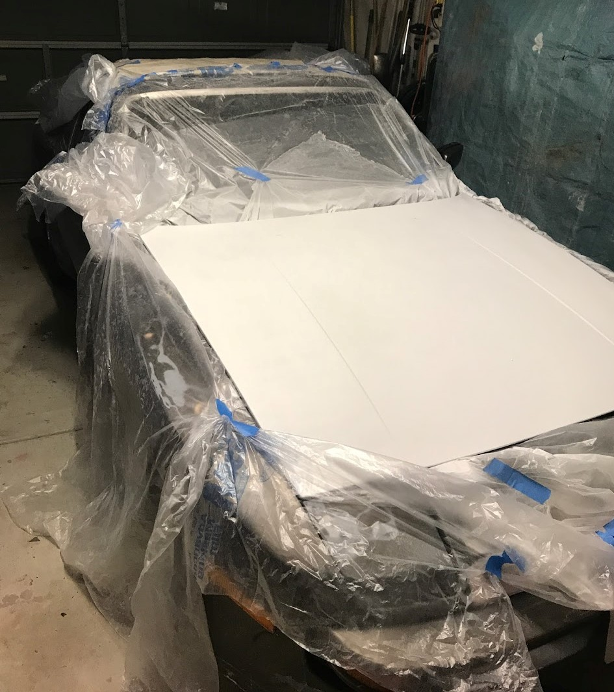
- 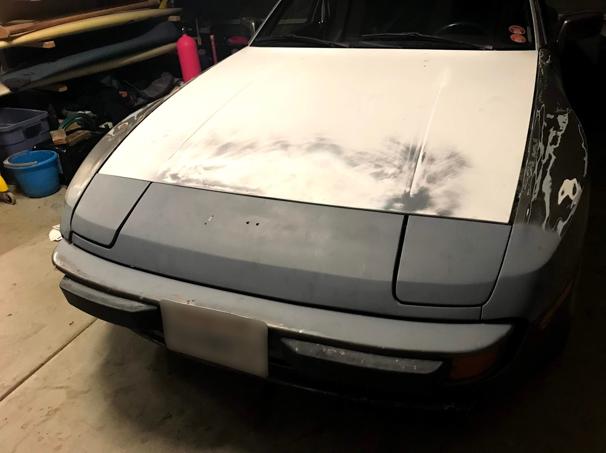
- 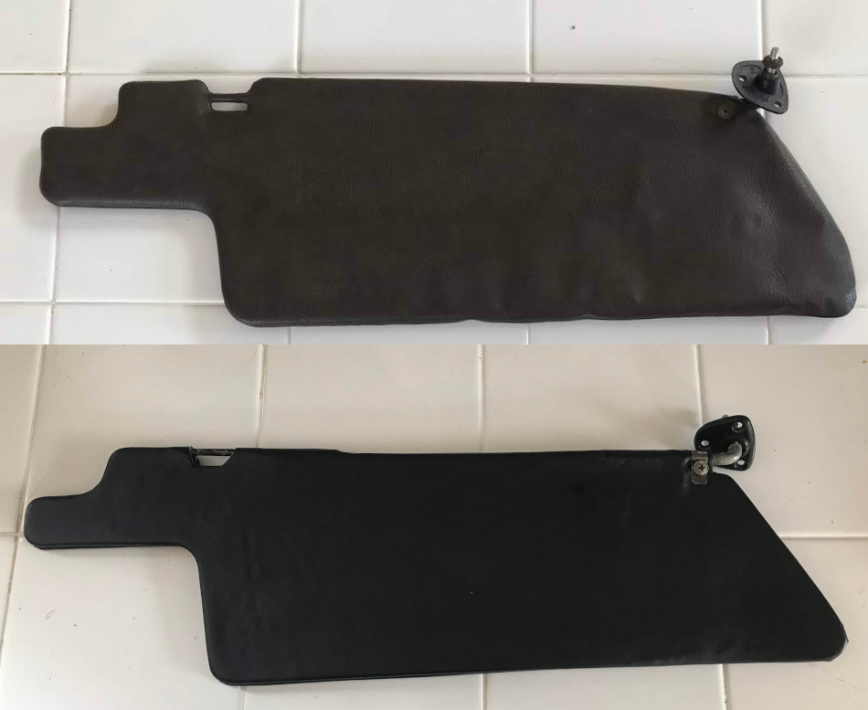
Porsche 944 Restoration
Since the beginning of 2019, I have been restoring a 1983 Porsche 944. Because I did not have any previous knowledge of cars going into this project, I just did what I had been doing before to solve all of my previous problems—I used on the internet. Through searching online forums and communities, I have learned how to diagnose and repair engine problems, fix electrical issues and even re-upholster the interior.
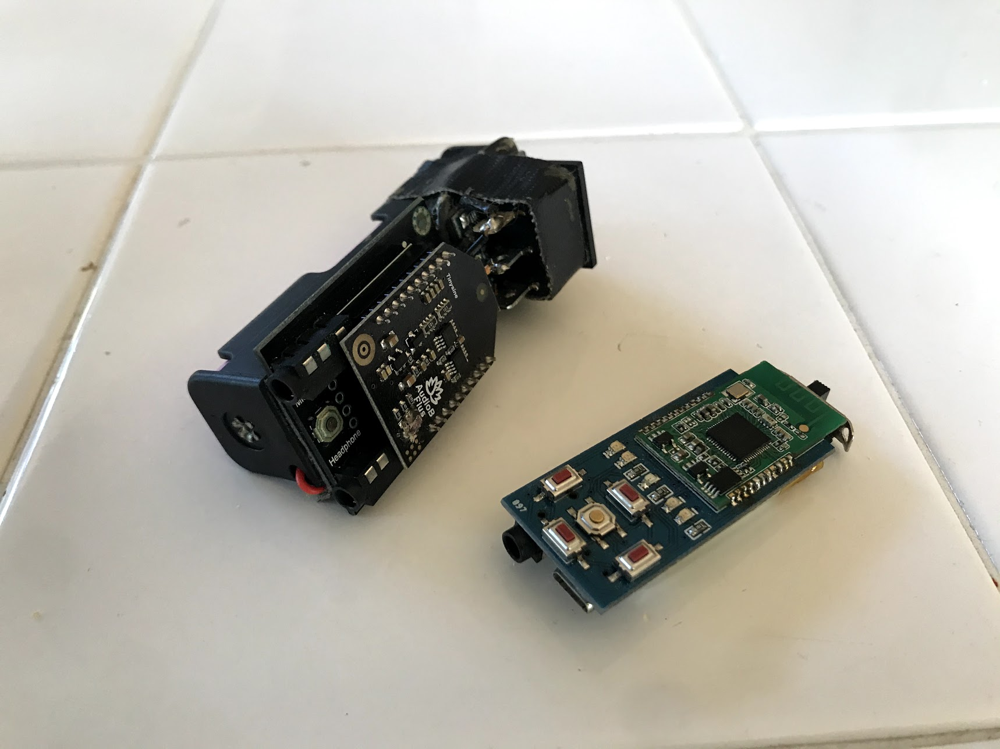
Bluetooth Audio Receivers
Frustrated with the lack of a headphone jack on my phone, I created a rechargeable receiver that allows my phone to transmit audio wirelessly to headphones. The one you see on the left is the first version I made that used a 18650 lithium-ion battery as its power source. As you can see it is quite bulky so I decided to create a second version which is much slimmer.
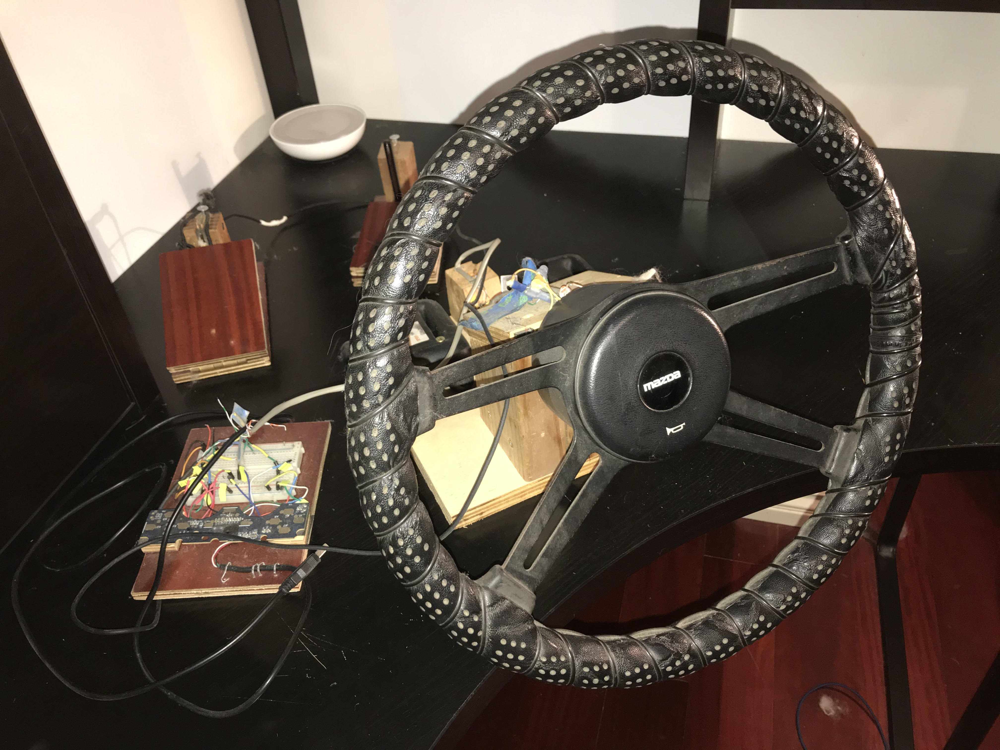